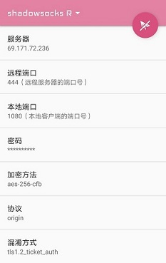

这里介绍Windows系统和安卓手机以及苹果手机和苹果电脑的科学上网方法。
使用本方法之前，先退出国产杀毒软件。比如360，金山毒霸之类的。
一、Windows客户端 下载
下载后解压，如果没有压缩软件，请下载
如果是WindowsXP及以下系统，请双击 ShadowsocksR-dotnet2.0.exe
如果是Windows 7及以上系统，请双击 ShadowsocksR-dotnet4.0.exe
然后打开浏览器就可以访问google, youtube之类的网站了。
二、安卓客户端 下载1 或者 下载2
下载安装完成后，修改服务器配置信息。
配置名称：SSR
服务器：69.171.72.236
远程端口：444
本地端口：1080
密码：ZmRkOTQ1Mm
加密方法：aes-256-cfb
协议：origin
混淆方式：tls1.2_ticket_auth

如上图配置好之后，点击右上角画斜杠的纸飞机，变成下图的样子

然后打开手机浏览器就可以访问google, youtube之类的网站了。
使用中有任何问题，请扫码入群讨论或加群主微信 Freeskyv